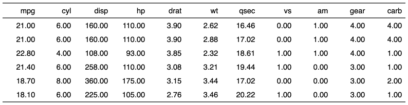

| colformat_double {flextable} | R Documentation |
Format numeric cells in a flextable.
colformat_double( x, i = NULL, j = NULL, big.mark = get_flextable_defaults()$big.mark, decimal.mark = get_flextable_defaults()$decimal.mark, digits = get_flextable_defaults()$digits, na_str = get_flextable_defaults()$na_str, nan_str = get_flextable_defaults()$nan_str, prefix = "", suffix = "" )
x |
a flextable object |
i |
rows selection |
j |
columns selection. |
big.mark, digits, decimal.mark |
see |
na_str |
string to be used for NA and NaN values |
nan_str |
string to be used for NA and NaN values |
prefix |
string to be used as prefix or suffix |
suffix |
string to be used as prefix or suffix |

Other cells formatters:
colformat_char(),
colformat_datetime(),
colformat_date(),
colformat_image(),
colformat_int(),
colformat_lgl(),
colformat_num(),
compose(),
set_formatter()
dat <- mtcars ft <- flextable(head(dat)) ft <- colformat_double(x = ft, big.mark=",", digits = 2, na_str = "N/A") autofit(ft)